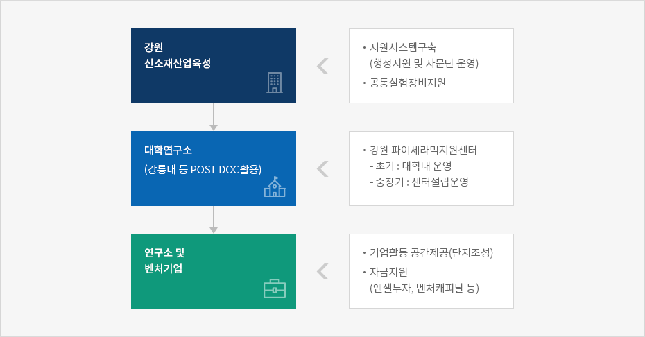

신소재산업
- Home
- 주요산업
- 신소재산업
신소재산업의 특성
신소재란 기존의 원료 또는 새로운 원료를 기초로 하여 새로운 제조공정과 가공기술을 응용, 새로운 특성을 부여함으로써 기존 제품으로서는 만족시킬 수 없는 새로운 기능을 추가하여 고부가가치를 실현하는 소재를 의미함.
신소재가 최종 소비재가 아니고 첨단산업 등에 투입되는 소재라는 점을 고려할 때, 신소재산업의 경제적 파급효과는 직접적인 효과보다는 관련산업에 미치는 간접적인 효과 및 외부경제효과가 매우 크게 나타나고 있음.
강원권의 신소재산업 현황
-
강원지역은 기존 소재업체와의 연계 하에 신소재산업의 발전을 기대할 수 있다는 점에서 긍정적이며, 산업구조의 고도화 측면에서도 유망함.
- 강원지역은 요업 · 토석제품, 비금속, 희유금속 등 소재관련산업의 비중이 높으며, 특히 파인세라믹스부문 중 유망분야로는 알루미나자기, 지르코니아자기, 합성다이아몬드, 뉴글래스와 같은 구조세라믹스, 촉매 · 담체세라믹스, 시멘셔스세라믹스 등이 있음.
-
강원지역은 지방자치단체 주도로 과학기술정책을 활발하게 추진하고 있어 지역기술력 향상, 연구 · 기술 인력 양성, 신산업 창출에 유리한 환경을 구축하고 있음.
- 강릉에서 추진중인 첨단과학산업단지 조성, 석재 복합 신소재 연구센터 등으로 산 · 학 · 연 상호협력의 필요성이 강화되고 있음.
-
수도권과의 고속 접근망을 확충하고 있어 생산의 효율성 및 수급의 원활화를 기할 수 있는 입지여건을 확보한다면 다품종소량생산을 특성으로 하는 신소재산업의 발전에 유리함.
- 강원도 동해안 지역은 신소재산업이 발달한 일본과 인접하고 있어 일본 신소재업체와의 협력체제 구축하여 성장 도모가 가능함.
신소재산업 육성을 위한 필요기능
산 · 학 · 연 공동연구협력
- 신소재산업은 첨단지식산업으로서 기존 소재를 대체 또는 보완하면서 자동차, 우주·항공, 정보 통신산업 등 첨단산업의 핵심소재로 사용되고 있어 대표적인 미래성장형산업이라 할 수 있음.
- 중소기업의 기술개발을 위해서는 산·학·연 공동연구가 활성화 될 필요성이 있음.
- 강원지역의 경우 파인세라믹스 분야를 중심으로 연구개발 협력체제를 구축함.
인력양성
-
신소재산업이 지속적인 연구역량을 갖추기 위해서는 고급연구인력 확보가 시급함.
- 신소재관련 학과출신의 고급인력을 산업인력으로 전환할 수 있도록 일반기업체에 위탁연수기능을 확대함.
-
강릉지역에 기존 소재관련 업체를 중심으로 첨단기술력을 지원할 수 있는 신소재산업 지원센터의 설립을 고려함
- 강원 신소재산업지원센터는 신소재의 기술개발지원, 국내외 시장수요 조사, 산업여건 분석 등의 기능을 담당함으로써 신소재 개발 및 산업화 전략을 제시함.
- 실험실 창업, 분리창업 등 대학 및 기업에서 생물벤처업체를 양성할 수 있는 창업지원 시스템을 구축함.
강원 신 소재산업 육성전략
-
신소재산업과 관련한 기술개발에 대해 막대한 투자가 소요되고 있으나 국내 중소기업은 자금력 부족으로, 대기업은 수익성을 추구하고 있어 적극적인 투자가 이루어지기 어려운 점이 있음.
- 도 차원에서 신소재 산업에 대한 연구개발지원프로그램을 수립함으로써 국내 신소재산업의 발전토대를 구축함.
-
강원지역은 석회석 등 기초소재 관련 중소기업이 타 시도에 비해 높은 비중을 차지하고 있음.
- 입지적 특성을 고려할 때 신소재 산업을 도 차원에서 육성 · 발전시킴으로써 타 시도와 차별적인 지역산업 진흥전략으로 수립할 필요성이 있음.


-
강원 신소재산업육성
- 지원시스템구축(행정지원 및 자문단 운영)
- 공동실험장비지원
-
대학연구소(강릉대 등 POST DOC활용)
-
강원 파이세라믹지원센터
- 초기:대학내 운영
- 중장기:센터설립운영
-
강원 파이세라믹지원센터
-
연구소 및 벤처기업
- 기업활동 공간제공(단지조성)
- 자금지원(엔젤투자,벤처캐피탈 등)

사업제안
파인세라믹 분야 중점 육성
-
신소재 산업을 지식집약화하기 위해서는 기술지원, 정보제공, 인력지원, 행정지원 등을 종합적으로 지원할 수 있는 시스템이 필요함.
- 이러한 기술 및 자금지원을 효율적으로 수행하기 위한 신소재산업지원센터를 적극 유치할 필요성이 있음.
-
신소재 산업은 산업의 특성상 고급인력을 필요로 하고 있으며, 관련 기업의 기존인력 재교육을 위한 기술인력센터의 유치를 통해 인력기반을 확충할 필요가 있음.
- 특히 대학관련 고급인력의 산업화를 위해서는 인력교육 및 양성을 위한 전문인력양성센터를 설립하여 운영할 필요성이 큼.